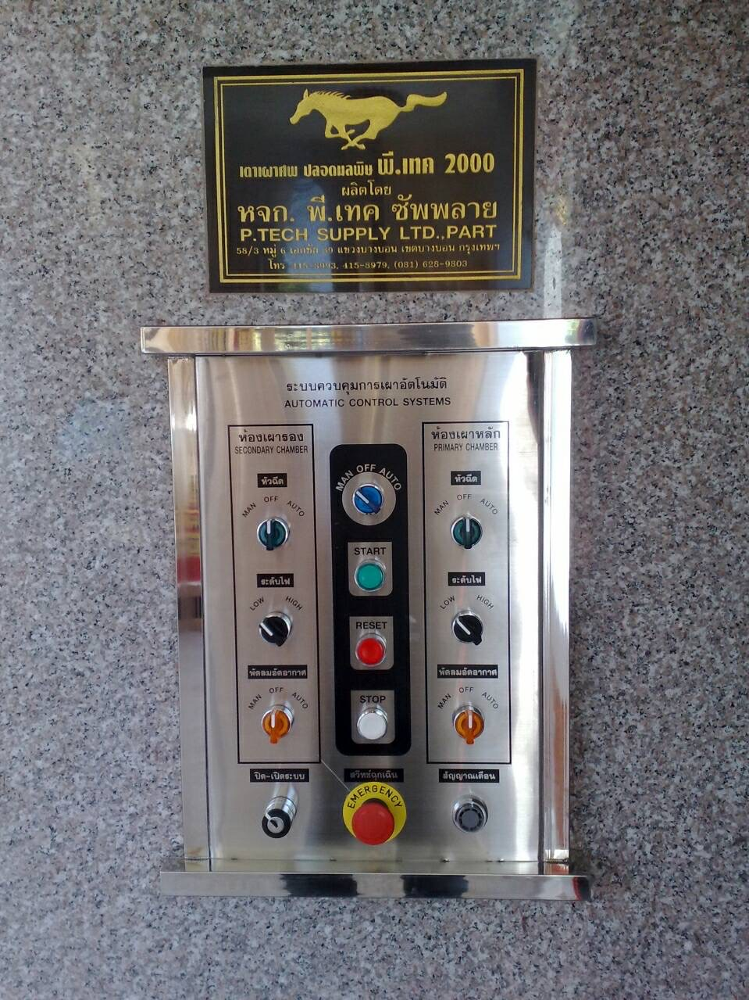
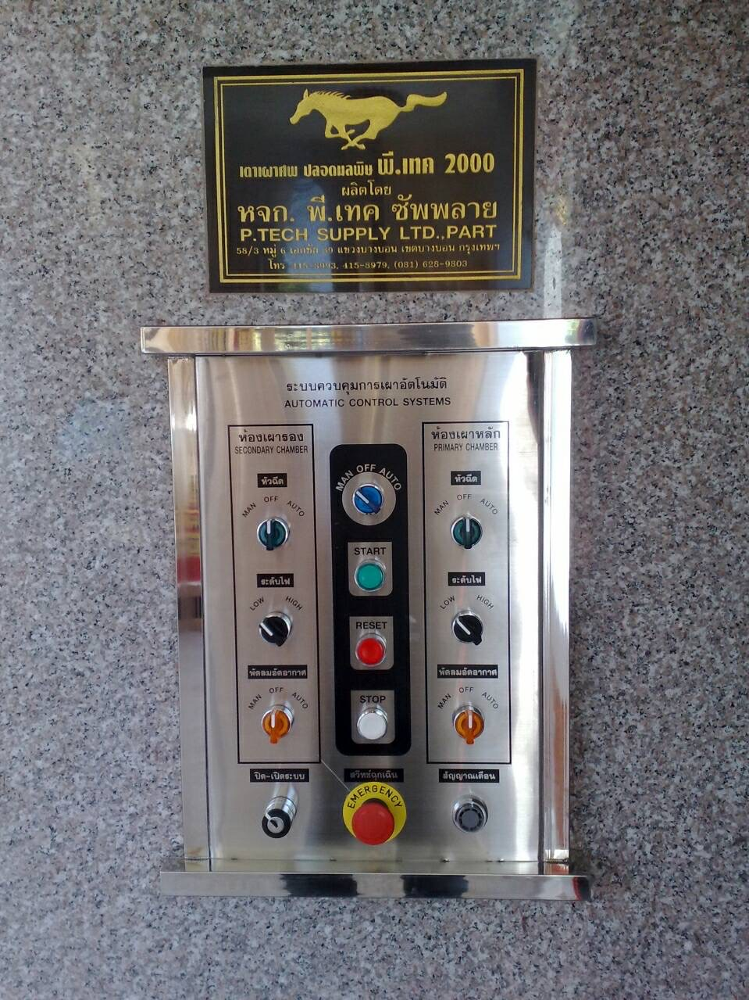
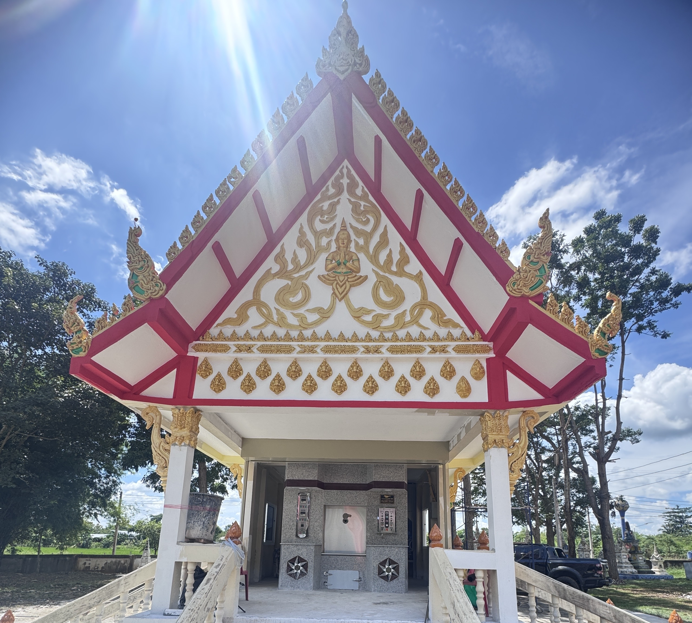
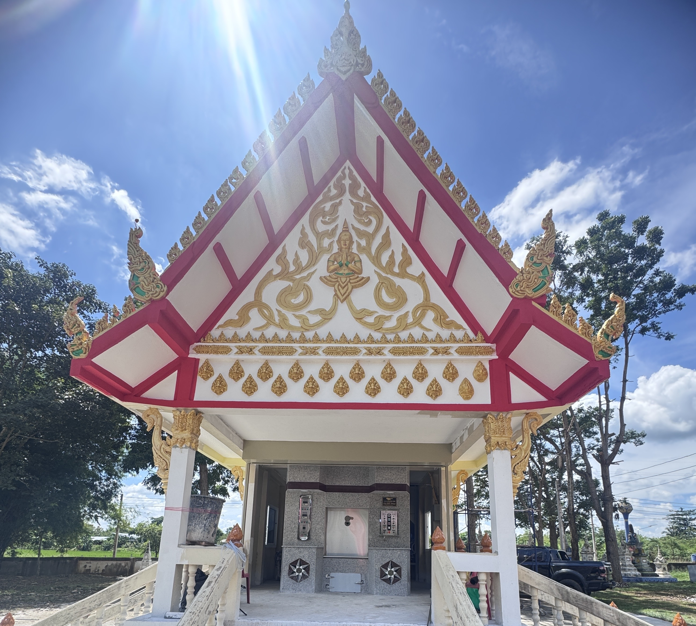
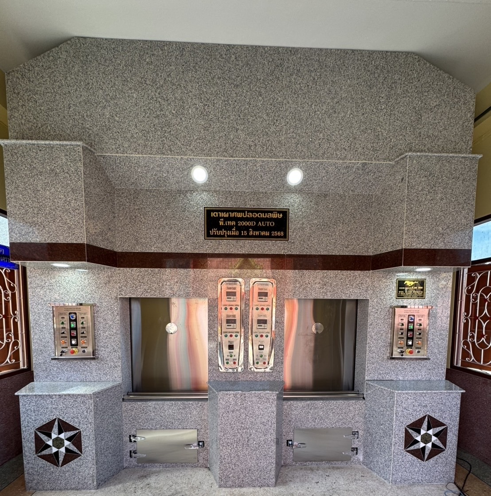
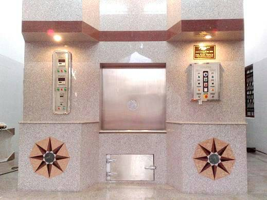
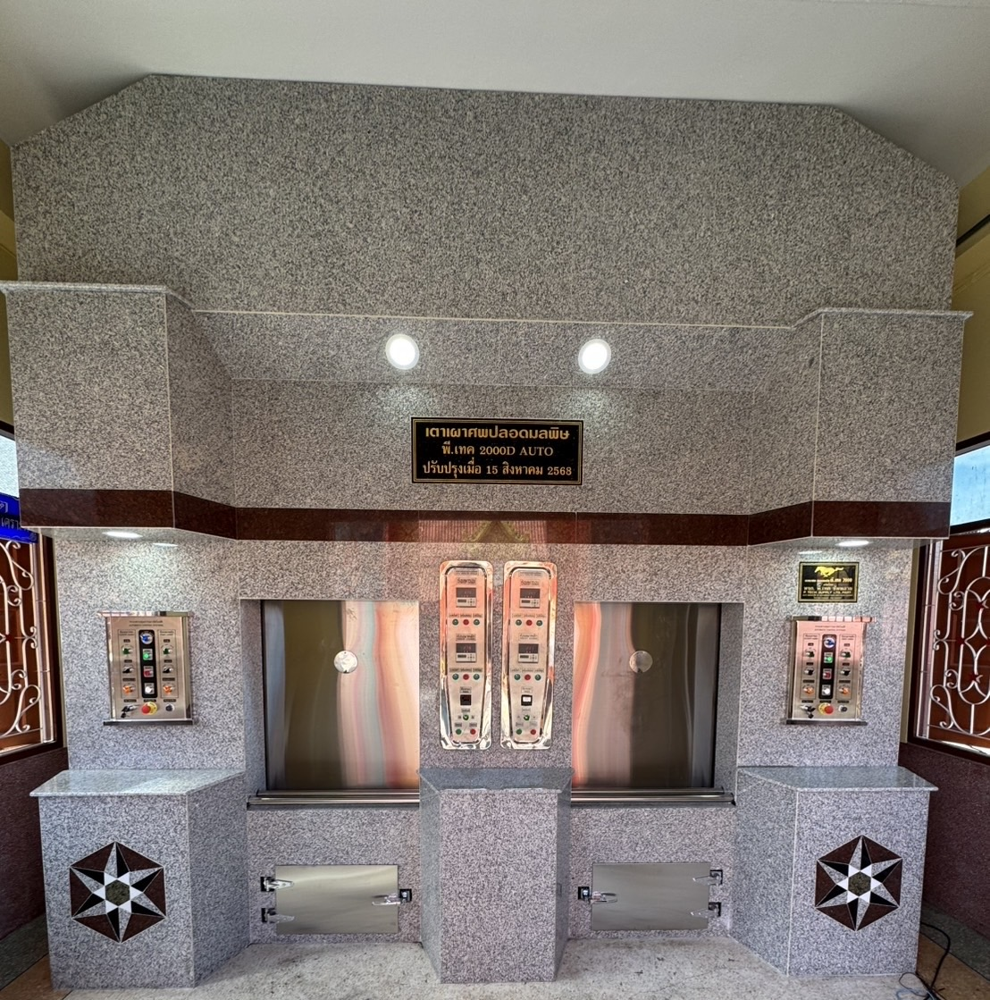
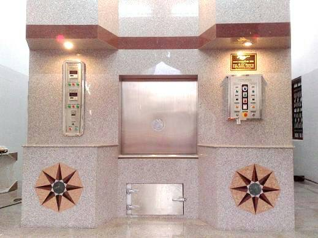

รักษ์สิ่งแวดล้อม เพื่ออนาคตที่ยั่งยืน
ปัจจุบันโลกของเรากำลังเผชิญกับแหล่งกำเนิดมลพิษหลากหลายรูปแบบ ไม่ว่าจะเป็น
โรงงานอุตสาหกรรม
แหล่งน้ำเสีย
โรงเก็บวัตถุอันตราย
เสียงรบกวนจากเครื่องยนต์
รวมถึงมลพิษทางอากาศจากควัน ก๊าซ เขม่า ฝุ่นละออง และเถ้าถ่าน
มลพิษเหล่านี้ส่งผลกระทบต่อสมดุลธรรมชาติ และก่อให้เกิดผลเสียต่อมนุษย์และสิ่งมีชีวิตในทุกมิติ ซึ่งหากไม่เร่งแก้ไข ปัญหานี้จะทวีความรุนแรงขึ้นจนยากต่อการฟื้นฟู
พี.เทค ซัพพลาย ภูมิใจที่ได้เป็นส่วนหนึ่งในการช่วยลดผลกระทบเหล่านี้ ด้วยการพัฒนา เตาเผาศพปลอดมลพิษ ไร้กลิ่น ไร้ควัน ที่ตอบโจทย์ทั้งด้านสิ่งแวดล้อมและความสงบเรียบง่ายตามหลักวัฒนธรรมไทย
ทำไมเตาเผาศพปลอดมลพิษจึงจำเป็นสำหรับสังคมไทยในปัจุบันเตาเผาศพปลอดมลพิษเป็นสิ่งจำเป็น
อย่างยิ่งในยุคนี้ เตาเผาศพแบบเดิมมีผลกระทบต่อสิ่งแวดล้อม ชุมชน
และสังคมอย่างมาก เตาเผาศพปลอดมลพิษ พี.เทค 2000 ถูกออกแบบ
คิดค้น และพัฒนาเพื่อช่วยแก้ปัญหาด้านมลพิษอย่างแท้จริง ด้วยความ
มุ่งมั่นและตั้งใจเพื่อพัฒนาสังคม โดยทีมงานและช่างฝีมือปราณีตที่มีประ
สบการณ์มานานกว่า 20 ปี ตั้งแต่ปี พ.ศ.2542 เป็นต้นมาทำไมเตาเผาศพปลอดมลพิษจึงจำเป็นสำหรับสังคมไทยในปัจุบันเตาเผาศพปลอดมลพิษเป็นสิ่งจำเป็น
อย่างยิ่งในยุคนี้ เตาเผาศพแบบเดิมมีผลกระทบต่อสิ่งแวดล้อม ชุมชน
และสังคมอย่างมาก เตาเผาศพปลอดมลพิษ พี.เทค 2000 ถูกออกแบบ
คิดค้น และพัฒนาเพื่อช่วยแก้ปัญหาด้านมลพิษอย่างแท้จริง ด้วยความ
มุ่งมั่นและตั้งใจเพื่อพัฒนาสังคม โดยทีมงานและช่างฝีมือปราณีตที่มีประ
สบการณ์มานานกว่า 20 ปี ตั้งแต่ปี พ.ศ.2542 เป็นต้นมา
ข้อดีของเตาเผาศพปลอดมลพิษ
- ลดการปล่อยควันและกลิ่นรบกวน ช่วยลดมลพิษทางอากาศในชุมชน
- ป้องกันเขม่าและฝุ่นละออง ไม่ทิ้งคราบสกปรกหรือเถ้าถ่านสู่สิ่งแวดล้อม
- ควบคุมอุณหภูมิและการเผาไหม้อย่างมีประสิทธิภาพ ช่วยให้กระบวนการเผาสมบูรณ์และประหยัดพลังงาน
- ปลอดภัยต่อชุมชนโดยรอบ ไม่ก่อให้เกิดผลกระทบต่อสุขภาพของประชาชน
- ส่งเสริมวัดและองค์กรให้เป็นมิตรต่อสิ่งแวดล้อม สร้างภาพลักษณ์ที่ดีต่อสังคม


 

 


 


